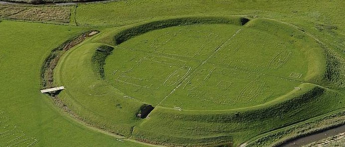
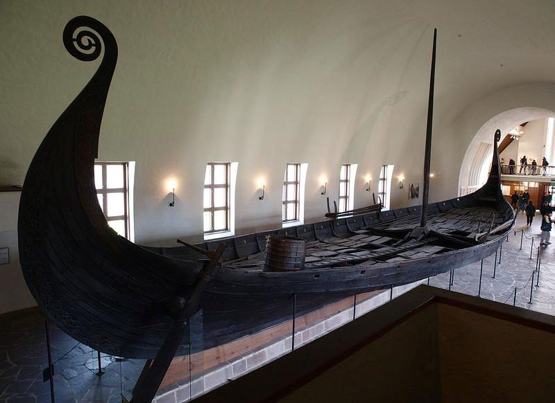
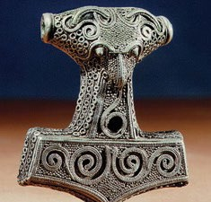
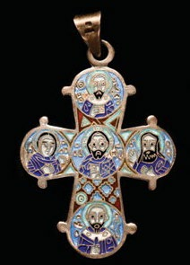

1.2 – VIKINGETID (ca. 750-1050)
sidde 07
I vikingetiden blev Danmark samlet under én konge, og magten i landet begyndte at blive centraliseret. Vikingerne sejlede på togter ud i Europa, hvor de handlede, plyndrede og slog sig ned. Det var også i denne periode, at de fleste danskere blev kristne.
DET DANSKE RIGE TAGER FORM
Vikingerne beskrives ofte som brutale krigere, og det var nogle af dem også. Men i virkeligheden var langt de fleste i vikingetiden bønder, der dyrkede jorden og holdt dyr, eller de var handelsmænd, der købte og solgte varer. Den første kendte konge, Angantyr, samlede allerede omkring år 700 en del af det område, der senere blev til Danmark.
Selve ordet ”Danmark” kendes fra slutningen af 800-tallet. ”Dan” kommer af ”daner” og betegner det folkeslag, som boede i det danske område. ”Mark” betyder ”grænseområde”. Danmark var altså ”danernes grænseområde”. Første gang, man ser navnet Danmark brugt inden for landets grænser, er på en såkaldt runesten fra cirka år 955 rejst af kong Gorm den Gamle til minde om sin kone Thyra. Ordet runesten kommer af, at teksten på stenen er skrevet med runer, som var vikingetidens skrifttegn. Gorm den Gamles og Thyras søn, Harald Blåtand, regnes som den første konge, der regerede hele Danmark, og han var også konge over dele af Norge. Harald Blåtand rejste også en runesten omkring år 965. Stenene står i dag i byen Jelling i Jylland.
For at sikre sit rige mod fjender opførte Harald Blåtand omkring år 980 en række ringborge i forskellige dele af landet. Mange af disse (for eksempel Aggersborg og Fyrkat i Nordjylland, Nonnebakken på Fyn samt Trelleborg og Borgring på Sjæl land) kan fortsat ses i det danske landskab. Disse militære anlæg var i datidens målestok store byggearbejder. De fortæller os derfor også, at den danske konge på dette tidspunkt havde magt til at indkræve skatter og skaffe store mængder arbejdskraft. Dette viser, at Danmark var ét rige samlet under én central magt.Vikingeborgen Trelleborg ved Slagelse på Vest-Sjælland. Foto: Nationalmuseet.
Vikingeborgen Trelleborg ved Slagelse på Vest-Sjælland. Foto: Nationalmuseet.
Læremateriale Til Indfødsretsprøven

sidde 08
VIKINGERNES KONTAKT MED OMVERDENEN
Vikingerne havde meget kontakt med udlandet. Udviklingen af vikingeskibene gjorde det muligt at rejse langt for at handle og bosætte sig. Vikingeskibene var nemlig både mere solide og smidige end tidligere tiders skibe. De kunne derfor sejle på havet også under vanskelige forhold, komme hurtigt frem og også sejle op ad floder til byer, der ikke lå ved havet. Vikingerne handlede med resten af Europa og havde også kontakt med de arabiske lande. Men ikke alt var fredelig samhandel. I 800-tallet tog danske vikinger også på togter blandt andet til England og Frankrig og så langt væk som til Konstantinopel (Istanbul). På disse togter udplyndrede de klostre og byer og krævede skat af de lokale.
Under deres togter erobrede vikingerne også store landområder. Nogle vikinger bosatte sig i de områder, som de erobrede, for eksempel i Normandiet i Frankrig. Den danske konge Svend Tveskæg (987-1014) erobrede England, som han blev konge af i 1013. Hans søn Knud den Store (1018-35) var også konge af England, og herskede over Norge på det tidspunkt, hvor vikingeriget var størst. Det store rige faldt dog hurtigt fra hinanden igen. Men vikingernes tilstedeværelse i England har sat varige spor. Blandt andet fordi den engelske befolkning optog mange ord fra vikingernes sprog ”oldnordisk”, som er forløberen for nutidens dansk. Moderne engelsk skønnes at indeholde et par hundrede ord fra oldnor disk. Det gælder for eksempel egg (æg), window (vindue), knife (kniv), law (lov), sell (sælge).Vikingeskib fra 800-tallet. Foto Nationalmuseet.
Vikingeskib fra 800-tallet. Foto: Nationalmuseet.
Læremateriale Til Indfødsretsprøven

sidde 09
ASATRO
I det danske område dyrkede indbyggerne en nordisk religion, der kaldes asatro. Det betyder troen på aserne, der var guder.
Centralt i asatroen var såkaldte ofringer, ritualer og ceremonier, hvor der blev givet gaver til guderne. Det kunne være smykker, mad, redskaber, men også dyr og mennesker, som blev slået ihjel til lejligheden. Dette kunne foregå i naturen ved særlige helligsteder som i skoven, kilder eller moser eller ved de huse, vikin gerne boede i.
Gudernes konge hed Odin. Han er ofte beskrevet som en ældre mand med kun ét øje og to ravne siddende på skuldrene. Blandt de andre guder i den nordiske myto logi kan nævnes Freja, der var gudinde for frugtbarhed, og torden- og krigsguden Thor, der kørte hen over himlen med sin vogn, hvilket ifølge myten var det, man kunne høre, når det tordnede.
Mange gudenavne fra den nordiske myto logi lever videre i det danske sprog, for eksempel i ugedagenes navne. Onsdag kommer af Odin, torsdag af Thor. Også mange stednavne har rødder i mytologien. Det gælder for eksempel Odense. Navnet kommer af ”Odins vi”, der betyder Odins helligdom. Tórshavn, som er den største by på Færøerne, er naturligvis Thors havn.Thors hammer, som hedder Mjølner. Thors hammer, som hedder Mjølner.
I vikingetiden kom kristendommen til Danmark og erstattede langsomt asatroen. Den tyske missionær Ansgar byggede i midten af 800-tallet kirker i Hedeby og Ribe, og i cirka 965 blev Harald Blåtand døbt. På den runesten, han rejste ved Jelling, står der, at kong Harald vandt sig hele Danmark og Norge og gjorde danerne kristne. Harald Blåtands Jellingsten kaldes derfor ofte for Danmarks dåbsattest.Dagmarkorset, smykke med Jesus i midten.
Dagmarkorset, et smykke med Jesus i midten.
Læremateriale Til Indfødsretsprøven


Fonte: Læremateriale til Indfødsretsprøven, SIRI.